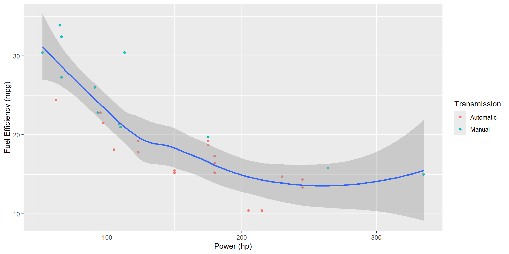
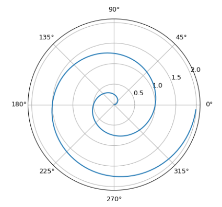

Accessible Maths Materials
Tools, Tips and Conversations
Tom Wicks and Rachel Tunstall
10 March, 2026
Disclaimers
- This session is not to instruct you on how you should or should not produce teaching materials.
- You cannot make all your existing materials accessible overnight.
- We do not have all the answers to your specific needs, but we are happy to discuss and point you in the right direction.
Overview
- Accessibility principles
- Maths is special(?)
- Some(!) tools for creating accessible maths materials
- Existing resources and communities
- Discussion
- Keep in touch!
Accessibility Principles

HITCH:
Headings (structure)
Images (alt text)
Tables
Colour, Contrast
Hyperlinks
Accessible materials benefit everyone
Maths is Special
1. Equations
Good solution is MathJax rendering of equations to HTML
\[\begin{equation}
\int_0^\infty e^{-x^2}\,\text{d}x=\frac{\sqrt{\pi}}{2}
\end{equation}\]
MS Word/PowerPoint Equation Editor
- Basic equations/symbols
- Visual editor
Maths is Special
2. Handwriting
Pros
- Authentic/Natural
- Engaging, especially when presenting
- Quicker to write
Cons
- Legibility
- Contrast, Pixelation
- Not machine readable
Maths is Special
3. Figures
Figure Example 1: Tabsets
| mpg | cyl | disp | hp | drat | wt | qsec | vs | am | gear | carb | |
|---|---|---|---|---|---|---|---|---|---|---|---|
| Mazda RX4 | 21.0 | 6 | 160.0 | 110 | 3.90 | 2.620 | 16.46 | 0 | 1 | 4 | 4 |
| Mazda RX4 Wag | 21.0 | 6 | 160.0 | 110 | 3.90 | 2.875 | 17.02 | 0 | 1 | 4 | 4 |
| Datsun 710 | 22.8 | 4 | 108.0 | 93 | 3.85 | 2.320 | 18.61 | 1 | 1 | 4 | 1 |
| Hornet 4 Drive | 21.4 | 6 | 258.0 | 110 | 3.08 | 3.215 | 19.44 | 1 | 0 | 3 | 1 |
| Hornet Sportabout | 18.7 | 8 | 360.0 | 175 | 3.15 | 3.440 | 17.02 | 0 | 0 | 3 | 2 |
| Valiant | 18.1 | 6 | 225.0 | 105 | 2.76 | 3.460 | 20.22 | 1 | 0 | 3 | 1 |
| Duster 360 | 14.3 | 8 | 360.0 | 245 | 3.21 | 3.570 | 15.84 | 0 | 0 | 3 | 4 |
| Merc 240D | 24.4 | 4 | 146.7 | 62 | 3.69 | 3.190 | 20.00 | 1 | 0 | 4 | 2 |
| Merc 230 | 22.8 | 4 | 140.8 | 95 | 3.92 | 3.150 | 22.90 | 1 | 0 | 4 | 2 |
| Merc 280 | 19.2 | 6 | 167.6 | 123 | 3.92 | 3.440 | 18.30 | 1 | 0 | 4 | 4 |
| Merc 280C | 17.8 | 6 | 167.6 | 123 | 3.92 | 3.440 | 18.90 | 1 | 0 | 4 | 4 |
| Merc 450SE | 16.4 | 8 | 275.8 | 180 | 3.07 | 4.070 | 17.40 | 0 | 0 | 3 | 3 |
| Merc 450SL | 17.3 | 8 | 275.8 | 180 | 3.07 | 3.730 | 17.60 | 0 | 0 | 3 | 3 |
| Merc 450SLC | 15.2 | 8 | 275.8 | 180 | 3.07 | 3.780 | 18.00 | 0 | 0 | 3 | 3 |
| Cadillac Fleetwood | 10.4 | 8 | 472.0 | 205 | 2.93 | 5.250 | 17.98 | 0 | 0 | 3 | 4 |
| Lincoln Continental | 10.4 | 8 | 460.0 | 215 | 3.00 | 5.424 | 17.82 | 0 | 0 | 3 | 4 |
| Chrysler Imperial | 14.7 | 8 | 440.0 | 230 | 3.23 | 5.345 | 17.42 | 0 | 0 | 3 | 4 |
| Fiat 128 | 32.4 | 4 | 78.7 | 66 | 4.08 | 2.200 | 19.47 | 1 | 1 | 4 | 1 |
| Honda Civic | 30.4 | 4 | 75.7 | 52 | 4.93 | 1.615 | 18.52 | 1 | 1 | 4 | 2 |
| Toyota Corolla | 33.9 | 4 | 71.1 | 65 | 4.22 | 1.835 | 19.90 | 1 | 1 | 4 | 1 |
| Toyota Corona | 21.5 | 4 | 120.1 | 97 | 3.70 | 2.465 | 20.01 | 1 | 0 | 3 | 1 |
| Dodge Challenger | 15.5 | 8 | 318.0 | 150 | 2.76 | 3.520 | 16.87 | 0 | 0 | 3 | 2 |
| AMC Javelin | 15.2 | 8 | 304.0 | 150 | 3.15 | 3.435 | 17.30 | 0 | 0 | 3 | 2 |
| Camaro Z28 | 13.3 | 8 | 350.0 | 245 | 3.73 | 3.840 | 15.41 | 0 | 0 | 3 | 4 |
| Pontiac Firebird | 19.2 | 8 | 400.0 | 175 | 3.08 | 3.845 | 17.05 | 0 | 0 | 3 | 2 |
| Fiat X1-9 | 27.3 | 4 | 79.0 | 66 | 4.08 | 1.935 | 18.90 | 1 | 1 | 4 | 1 |
| Porsche 914-2 | 26.0 | 4 | 120.3 | 91 | 4.43 | 2.140 | 16.70 | 0 | 1 | 5 | 2 |
| Lotus Europa | 30.4 | 4 | 95.1 | 113 | 3.77 | 1.513 | 16.90 | 1 | 1 | 5 | 2 |
| Ford Pantera L | 15.8 | 8 | 351.0 | 264 | 4.22 | 3.170 | 14.50 | 0 | 1 | 5 | 4 |
| Ferrari Dino | 19.7 | 6 | 145.0 | 175 | 3.62 | 2.770 | 15.50 | 0 | 1 | 5 | 6 |
| Maserati Bora | 15.0 | 8 | 301.0 | 335 | 3.54 | 3.570 | 14.60 | 0 | 1 | 5 | 8 |
| Volvo 142E | 21.4 | 4 | 121.0 | 109 | 4.11 | 2.780 | 18.60 | 1 | 1 | 4 | 2 |
Figure Example 2: Interactive Widgets
Figure Example 3: Interactive Graph
The figure below was created using Observable and RShiny, with Component Layout to position inputs and outputs.
Code
Maths is Special
4. Computing
Maths is Special
4. Computing
- Html documents with code blocks that can be copied
- Syntax highlighting
- Animated code blocks
Maths is Special
4. Computing
- Html documents with code blocks that can be copied
- Syntax highlighting
- Animated code blocks
- Line highlighting
Maths is Special
4. Computing
- Html documents with code blocks that can be copied
- Syntax highlighting
- Animated code blocks
- Line highlighting
- Code execution

Some Tools
- Pandoc - conversion of existing materials
- Chirun - conversion to multiple formats, support available
- R Markdown, R Bookdown, Quarto - frameworks for creating rich interactive notes and presentations; ideal for statistics and data analysis materials
- MS Office Equation Editor - shallow learning curve and ideal for relatively simple materials
- Jupyter Notebooks, Jupyter Books - great for notes on numerical computation or computing
Existing Resources and Communities
- Guidance from the Leicester Learning Technology Team
- Colleagues!
- University of York (extensive advice and resources)
- Bath (advice and resources, e.g. extension to R Bookdown)
- Make Things Accessible (generalist, but some maths guidance)
- Accessibility checklists, e.g.
Discussion
- What tools are you using already?
- Did today’s presentation give you any ideas?
- What do you want to do next?
- Opportunities for collaborations?
Keep in touch!
- Exchange contact details with anyone new you met today
- Talk to us!
- Tom Wicks (tom.wicks@leicester.ac.uk)
- Rachel Tunstall (rct13@leicester.ac.uk)
Thank you!
Access slides